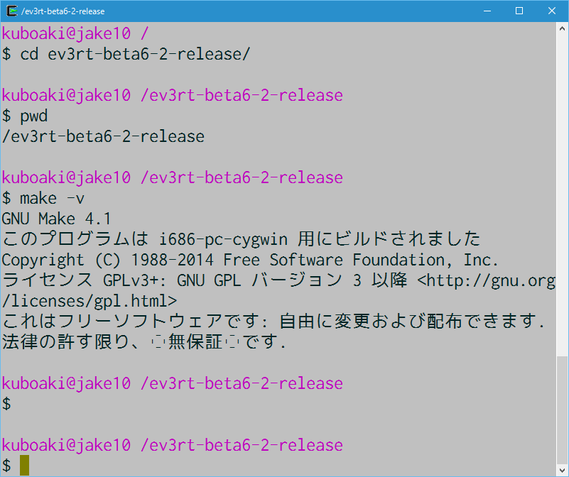

要素技術とモデルを開発に使おう: 背景と準備
ETロボコン実行委員会er-info@etrobo.jp
2.3, 2019-04-12 16:46:59
2019年用
この教材について
目的
- この教材は、ETロボコンに参加されるみなさんに、モデル作成に必要となる知識やスキル取得の機会を提供することを目的に作成しています
著作
- この教材はETロボコン実行委員会が作成したものです
- この教材の著作権は、ETロボコン実行委員会に帰属します
使用について
- ETロボコンの参加資格（企業・大学・個人）の範囲内に限り、ご自由に活用していただいてかまいません
はじめに
本コースの想定する受講者
C言語/C++言語、あるいはこれらに類似の言語のプログラミング経験はあるが、モデルを使った開発経験のないエンジニア
トレーニングのゴール
- モデルとコードのつながりを知っている
- 要素技術をモデルに組込んで使える
トレーニングの進め方
- コードの状況をモデルで表すことで、モデルが表すものを実感します
- モデルとコードを並行して編集し、モデルとコードの対応づけを学びます
- 要素技術を実験してからモデルに組込み、そのモデルからコードを作成します
このコースの背景
このコース「要素技術とモデルを開発に使おう」は、次のことを主眼に作成してあります。
- コードを書くのにモデル図が役に立つことを実感してもらうこと
- 要素技術をモデル図に反映する方法について学ぶこと
コース提供の経緯
モデリングの演習に、倒立振子ロボットを使うと、次のようなことが起きました。
- 2輪倒立で立たせることにばかり気をとられてしまう
- モデルに合うコードではなく、頭で考えたことに合うコードを書いている
一方、モデリング演習を通じて学んでほしいのは、次のようなことでした。
- 課題があったとき、それをモデルで表現する、モデルで考える
- コードはモデルに合わせて書く
- 要素技術をモデルに組込むことで結びつける
つまり、学んでほしいことに集中できない状況だったわけです。
このコースで学んでほしいことはなにか
そこで、次のようなことを理解する演習を提供するほうがよいのではないか、ということになりました。
- コードを書くのに図が使えることを実感する
- 要素技術の実験結果をモデル図に組込む方法を使ってみる
一方で、次のことを敢えてやらないことにしました。
- オブジェクト指向の考え方を解説する
- UMLの記法について解説する
- 開発プロセスに関して講義する
これらのことは、このコースでコードを書くのに図が使えることを知った上で、技術教育2の 「開発プロセスに沿って開発する」 で学ぶことにします。
そのために、次のような内容の演習を用意することになりました。
-
コードのやっていることを表すのにモデル図が使えることを実感する
- 最初は倒立振子なしサンプルのコードを元にモデル図で表してみる
- モデル図を使って現状を見直し、それに合わせてコードの構造も見直す
-
要素技術を実験しアプリケーションに組込むまでをやってみる
- 簡単なライントレーサーで、要素技術の必要性を感じる
- 要素技術として、比例制御を使えるかどうか実験する
- 実験した結果をモデル図に反映し、それに合わせてコードにも反映する
- 2輪倒立のライブラリを組み込んで倒立走行させる
このコース 「要素技術とモデルを開発に使おう」 は、以上のように構成されています。
目次
背景と準備（
text00 ）- 背景
- 準備
コードとモデル図を対応づけてみよう（
text01 ）sample00（ウォーカー）を動かしてみようsample01：システムの処理を担当するクラスを追加するsample01の構造をクラス図に表すsample01のコードを作成する- ここまでのまとめ
要素技術をシステムに組込もう（
text02 ）sample03（ライントレーサー）を動かしてみようsample03の振舞いの図を描いてみようsample03の課題を検討しようsample04：比例制御の実験をやろうsample05：検討結果をモデル図に反映するsample05の構造をクラス図に表すsample05のコードを作成する- ここまでのまとめ
倒立振子ライブラリをモデルに組込もう（
text03 ）sample_c4（倒立振子のサンプル）を試すsample_4cの構造をクラス図に表すsample_cpp4：倒立振子ライブラリの呼び出し方を考えるsample_cpp4の構造をクラス図に表すsample_cpp4のコードを作成する- ここまでのまとめ
- トレーニングのまとめ
準備１：演習で使う走行体のチェック
必ず、 参加年に指定された「EV3way-ET組み立て手順書」 を確認しましょう。
最初は倒立振子を使わないで演習します。
そのため、このトレーニングで使う 「トレーニング用補助脚」 がないと困ります。
- ロボットの前部に「トレーニング用補助脚」をとりつけてありますか
図 1. トレーニング用補助脚（前部）
- ロボットの後部にも「トレーニング用補助脚」をとりつけてありますか

図 2. トレーニング用補助脚（後部）
- リフトアームを取り付ける向き（脚にする側のポッチ数）に気をつけます

図 3. 「トレーニング用補助脚」の装着状態を横からみた図
準備２：EV3用の環境構築
Mindstorms EV3を使う場合は次の構築手順に従います。
ETロボコン EV3開発環境構築ガイド
TOPPERS/EV3RT とは？
開発環境構築のマニュアル
また、下記を参照しておくとよいでしょう。
開発環境構築の課題と対処（特に EV3RT における C++ のデストラクタの問題の項）
準備３：ターミナルの使い方の確認
Cygwinやターミナルが動作することを確認します。
Windowsユーザー:
Macユーザー:
|

図 4. cygwinのシェル画面
|
Unix のコマンドに慣れておきましょう
Unixの基本コマンド（ cd, ls, cp, make など）、ディレクトリやファイルの表記や操作方法を確認しておきましょう。
モデリングツールを用意する
モデリング演習には astah* Professional を使います。
参加者のみなさん向けに、期間限定の無償ライセンスが提供されています。
Windows PCだけでなく、MacやLinuxでも利用できます。
- 参加者向けの入手方法に従ってツールをダウンロードします
- インストール手順に沿ってインストールします
|
提出するモデル図をどのツールで描くのかは参加チームの自由です
同じモデリングツールで演習するのは演習を円滑にするためです。 |

図 5. astah* Professional の起動時の画面（一部）
参加者向けライセンスを設定します
評価用ライセンスではなく、astah* Professional の参加者向けライセンスを設定しましょう。
同じラインセンスで、 astah* SysML や、 astah* GSN も利用できます。
- 参加者向けの入手方法に従ってライセンスを入手します
-
提供される手順に従って、astah* Professional を起動し、ライセンスを設定します
- Windows PCの場合、ライセンスの設定時だけは「管理者で実行」で起動する必要があります
テキストエディターを用意する
「メモ帳で済ませよう」なんて、ダメ、ダメ、絶対！
プログラミング用のテキストエディターや、Eclipseのような統合環境（IDE）を使いましょう。
テキストエディターの例
Windows用:
- Notepad++、TeraPad、サクラエディタ、Atom、Brackets、Emacs、Vim、Sublime Text、Visual Studio Codeなど
Mac用:
- CotEditor、mi、TextMate、Atom、Brackets、Emacs、Vim、Sublime Text、Visual Studio Codeなど
テキストエディターに慣れておく
このトレーニングは、テキストエディターとコマンドラインツールを使います。
トレーニング中は、みなさんで同じやり方で進めます。
基本操作を確認しましょう
みなさんのテキストエディターの使い方を確認しておきましょう。
- ファイルの作成、削除、保存、別名での保存、扱えるファイル拡張子の確認
- 文字単位、単語単位、行頭・行末、文頭・文末などへのカーソルの移動
- テキストの入力、削除、コピーやペースト、検索、置換
- その他提供されているコマンドの使い方
ワークスペースを作成する
EV3RTの開発環境では、プログラムを作る場所をワークスペースと呼びます。
この演習で使うためのワークスペースを作成しましょう。
EV3RTをインストールしたディレクトリ中の hrp2/sdk ディレクトリに移動します。
$ cd (ev3rtのインストールディレクトリ）/hrp2/sdk
$ ls -1 (1)
common/
LICENSE
Makefile.sdk.conf
workspace/| 1 | ls はファイルリストの表示コマンド、 -1 （ハイフン・イチ）は、縦1列に出力表示するオプション |
このディレクトリの中に beginners ディレクトリを作成します。
$ mkdir beginners (1)
$ ls -1
beginners/ (2)
common/
LICENSE
Makefile.sdk.conf
workspace/| 1 | beginnersディレクトリを作成する |
| 2 | beginnersディレクトリが追加されている |
サンプルコードの準備
サンプルコードは、 beginners.zip の中の sample_cpp ディレクトリに含まれています。
ワークスペースとして作成した beginners ディレクトリの中に、sample_cpp の中に含まれる Makefile と sample00 ディレクトリとその中身すべてをコピーします（エクスプローラーやFinderで操作してもかまいません）
コピーしたら、コピー先のディレクトリの内容を確認しましょう。
$ cd (ev3rtのインストールディレクトリ）/hrp2/sdk/beginners
$ ls
sample00/ Makefile
$ ls sample00
Makefile.inc app.cfg app.cpp app.h util.cpp util.hモデル図作成の準備
モデル作成に使うクラスが定義されているテンプレートは、 beginners.zip の中の asta-template ディレクトリに含まれています。
内容を確認しておきましょう。
$ cd (beginners.zip を展開した場所）
$ ls asta-template/
README.md
ev3rt.asta (1)
テンプレートの使い方について.md
JudeP.properties (2)
JudeP.propertiesについて.md| 1 | EV3RT用 C++ ライブラリのテンプレートファイル |
| 2 | astah* を C++ 用に設定するためのプロパティファイル |
-
演習で作成するモデルの保存用に、デスクトップに
beginnersディレクトリを作成します- エクスプローラーやFinderで作成してかまいません
- Windowsでは
c:￥Users￥ログオン名￥Desktop￥beginnersになります（円記号は半角です） - Macでは
/Users/ログイン名/Desktop/beginnersになります
- テンプレートファイルをモデル保存用ディレクトリにコピーします
-
コピーできたかどうか確認します
$ cd (モデル保存用ディレクトリ） $ ls ev3rt.asta
モデル図を保存する場所が準備できました。
環境の使い方に慣れておく
Cygwin環境（Macではターミナル）の操作方法:
- ファイルやディレクトリの配置の理解
- Unixのシェルとコマンドの使い方
テキストエディターの操作方法:
- ファイルを作る、開く、保存する、閉じる
- 文章やコードを入力する、削除する、コピー＆ペーストする
- 文字列を検索、置換する
モデリングツールの操作方法:
- プロジェクトファイルの作成、保存
- モデル図を追加、複製、削除する
- モデル図の要素の追加、移動、修正、削除
モデリング言語の基本:
- UMLのよく使う図や構成要素の名前や役割
プログラムの実行形式について
EV3のプログラムをビルド・実行する方法は２つあります。
- 動的ローディング形式（ローダを使って指定したプログラムを起動する方式）
- スタンドアローン形式（プログラム自身がブートイメージとなる方式）
このトレーニングでは「動的ローディング形式」を使用します。
動的ローディング形式の特徴
EV3をリセットすることなく、アプリケーションプログラムを更新・追加できます
- 加えて、USBケーブルを使って転送すれば、Bluetoothの再接続やSDカードの抜き差しなしに転送できます
1枚のSDカードに複数のアプリケーションが登録できます
- ファイル名を変えて転送しておけば、実行時に選択して実行できます
短時間でビルドできます
- OSやライブラリを一緒にビルドしないので、その分ビルド時間が短くなります
動的ローディング形式のビルド手順
-
Cygwinやターミナルを起動して、アプリケーションのソースコードが含まれるワークスペース（下記の例では
beginners）へ移動します$ cd （EV3RTのインストールディレクトリ）/hrp2/sdk/beginners- 移動するのが、開発中のアプリケーションのディレクトリでは ない ことに注意しましょう
-
次のコマンドを実行します
$ make app=アプリケーションのディレクトリ名- ビルドに成功すると、
beginnersディレクトリ中にappというファイル名のロードモジュール（EV3本体に転送するファイル）ができます
- ビルドに成功すると、
アプリケーションローダの準備
動的ローディング形式のプログラムはアプリケーションローダを使って実行します。
みなさんの使っているEV3RTの開発環境が提供するアプリケーションローダでないとプログラムは起動しません。
micro SDカード（以降、短くSDカードと書きます）を使いまわすときなどは、SDカード上のアプリケーションローダを1度書き換えておいたほうがよいでしょう。
-
SDカードにアプリケーションローダを書き込みます
-
EV3RTインストールディレクトリの
sdcardディレクトリにあるuImageを探します
これがアプリケーションローダのファイルです - SDカードをPCに接続（挿入）します
-
uImageを、SDカードのルートディレクトリにコピーします - SDカードをPCと切断（抜出）します
-
EV3RTインストールディレクトリの
-
EV3本体をEV3RTを使って起動します
- SDカードをEV3本体に差し込んで、EV3本体の電源を入れます
- EV3RTのアプリケーションローダの画面が表示されたら起動は成功です
USBを使ったプログラムの転送・実行手順
- SDカードをEV3本体に差し込んで、EV3本体の電源を入れます
-
アプリケーションをSDカードに転送します
- USBケーブルでPCとEV3本体を接続します
- PCがSDカードを認識するのを待ちます（USBメモリのような外部ドライブに見えるでしょう）
-
ビルドしたアプリケーション（通常は
appというファイル名です）を/ev3rt/appsディレクトリにコピーします - コピーが終わったら、SDカードとPCの接続を解除します
- 解除を確認したら、EV3本体側のUSBケーブルを取り外します
-
アプリケーションを動かします
- アプリケーションローダの画面に「Load App」が表示されたら中央ボタンでローダのメニューに切替えます
- ロード元デバイスのリストが表示されたら、上下ボタンで「SD Card」に移動し、中央ボタンで選択します
-
転送したファイルリストが表示されたら、
app（や自分が変えたファイル名）を中央ボタンで選択します - アプリケーションが起動します
本資料について
資料名： 要素技術とモデルを開発に使おう: 背景と準備 （技術教育資料）
作成者： © 2016,2017,2018,2019 by ETロボコン実行委員会
この文書は、技術教育「要素技術とモデルを開発に使おう」に使用するETロボコン公式トレーニングのテキストです。
2.3, 2019-04-12 16:46:59, 2019年用
/